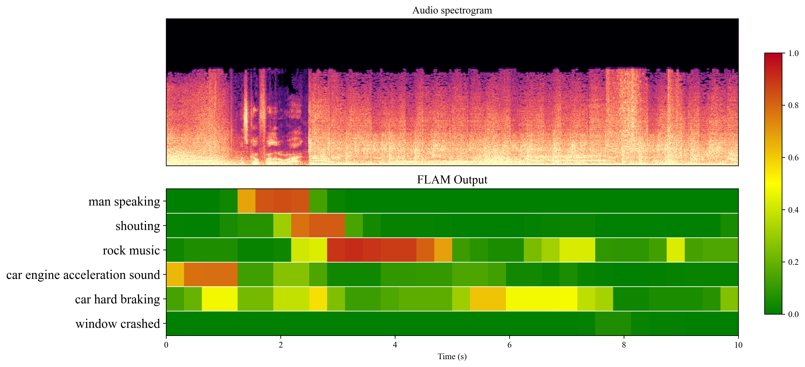

FLAM Detection Results on Real-world Examples


Multi-modal audio-language models (ALMs) excel at tasks like text-audio retrieval but typically lack the ability to localize specific sound events. In this work, we introduce an open-vocabulary sound event detection framework that extends a contrastive ALM to identify when particular events occur. We achieve this by coupling a memory efficient frame-level contrastive objective with the standard instance-level alignment, and by incorporating logit bias correction to handle label imbalance. To enable training on frame-level supervision, we build a large-scale synthetic dataset of diverse audio events labeled with text queries, leveraging captions generated by large language models. Experimental results show that our approach significantly improves open-vocabulary localization while preserving strong performance on global retrieval and downstream tasks.
On this page, we showcase the audio samples and sound event detection results from the FLAM experiments, as discussed in the paper, as well as FLAM detection results on real-world audio examples that are not seen during training.
Please allow a few seconds to load the audio files.